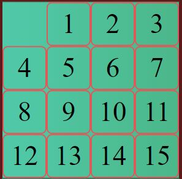

Популярная головоломка "пятнашка" была придумана еще в конце 19 века. Классическое игровое поле представляет собой матрицу 4х4 клеток, на котором по порядку (слева - направо и сверху - вниз) располагаются цифры от 1 до 15. Последняя клетка – пустая. Клетки перемешиваются определенным образом, и задача игрока состоит в том, чтобы восстановить их первоначальное правильное расположение.
